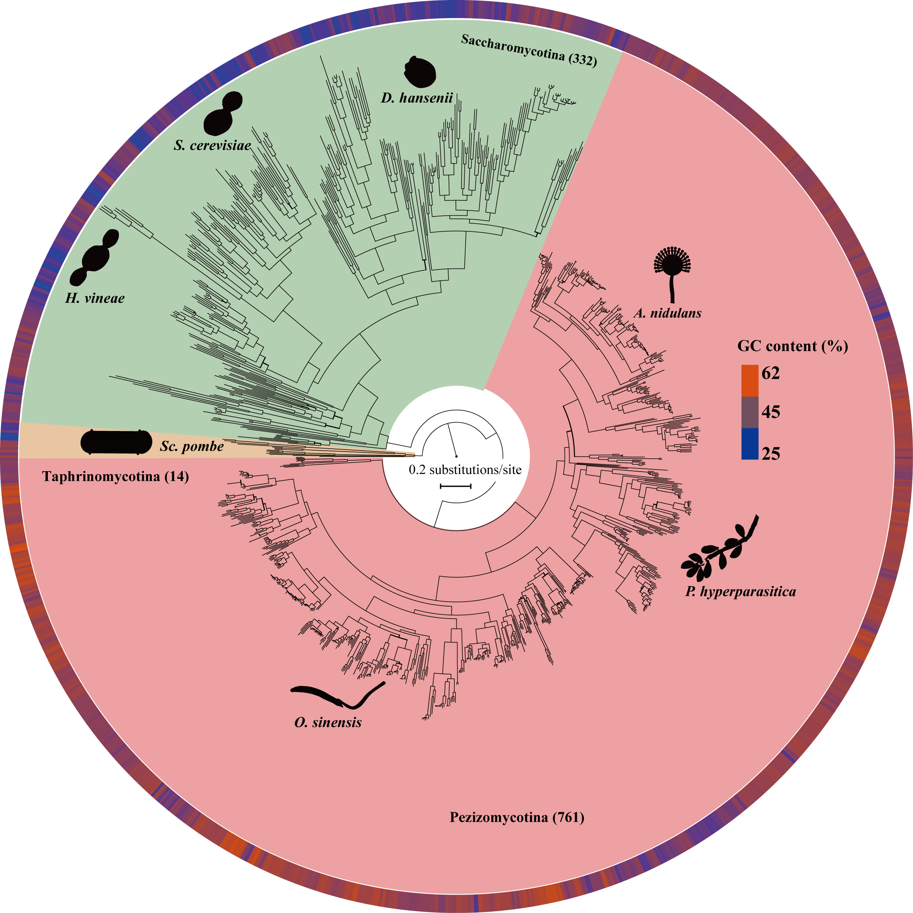

The Shen lab was established in December, 2019. It is part of the Institute of Insect Sciences at Zhejiang University. We believe that genome sequences, which are often used to understand the biodiversity that is essential to all aspects for the study of evolution and biology in general, are rich archives of history and function. Research in the lab focuses on utilizing computational approaches and genome-scale data to shed light on questions in molecular phylogenetics, evolutionary biology, comparative genomics, and bioinformatics.
Lab News
10/12/2020 - Xiayuhe Pei successfully applied for the graduate study at Peking University. Congrats Xiayuhe!

09/19/2020 - The Shen lab was funded by the NSFC grant (No. 32071665; 01/2021-12/2024)!

04/22/2019 - Xing-Xing Shen, 2019 Vanderbilt Postdoc of the Year Award, Honorable Mention!